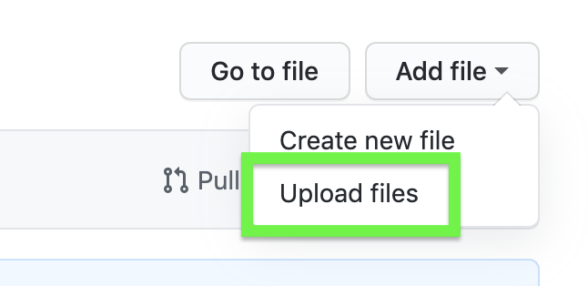

Include your data and mappings¶
> Note: This procedure is meant to aid the incorporation of data into the set of Jupyter Notebooks that are supported for mapping ventures. The data included via this procedure will not be uploaded to the main DataARC catalog for dissemination on the AR platform.
To add a dataset to the visualization tool, you will need to be signed into your GitHub account.
Procedure¶
Navigate to https://github.com/ropitz/experiments.
Fork the repository. Click the Fork button at the top right of the screen

You may be prompted to choose a location for the fork. You will likely want to choose your favored personal account - work, school, other, etc. If you have only one space available to fork this repository, you may not see the prompt.
You will be redirected to a new GitHub repository URL in your user space.
https://github.com/[user name here]/experiments>
Click on the data folder.

- From here, you can choose to add your data set as a whole JSON file, or add mapping(s) to the existing dataarc_combinators.csv. Jump to the detailed instructions for these options by following these links:
Upload a JSON file
Add a mapping from the browser
Add a mapping with your favorite CSV editor
Add a mapping in the Jupyter Notebook
Upload a File¶
Click on Add file, then Upload files in the drop down menu.
 Use the upload interface to drag and drop, or browse your local files.
Once files have been chosen, write a commit message. The first small box should contain a short description like “Adding my narwhal data”, while the larger box may contain a more expansive description.
Finish by clicking Commit changes

Now your data is included in your fork!
Add a mapping from the browser¶
These instructions will allow you to directly edit a comma-separated values (CSV) file from the GitHub browser window. Advantages of this method include in-place editing of the repository files, no need to download the full repository or upload edited files, no direct knowledge of git repositories required, and the combinator you add is saved and backed up on GitHub. The main disadvantage is editing a CSV file in it’s raw text format.
From the data folder page on your GitHub fork, click on dataarc_combinators.csv.
The file will open in your browser window.
Click the edit button at the top right corner of the file contents box.

Scroll to the bottom of the file
Add a new line with data filled in for each of the fields in the file separated by a comma. The fields are in order as follows:
ID A random numeric identifier for your combinator. Actual number and duplicates do not matter.
COMB A short string naming your combinator
User Your name
Data The name of the data set
Descrip A sentence or two to describe how the data set relates to the concepts used in this combinator.
Cite Any literature citations available as reference to this combination of data and concepts.
Query This section may contain a query string for database querying purposes. It is not used for visualization purposes, so there is no need to include it here.
Topics A comma-separated list of topics
Save your changes. Add a short description as a commit message and (optionally) write a short description of the modification you included to the boxes at the bottom of the screen.
Click Commit changes to save.
Your combinator is now saved in your fork!
Add a mapping with your favorite CSV editor¶
These instructions will guide you through the process of editing a comma-separated values (CSV) file using your favorite CSV editor (Google Sheets, Microsoft Excel, Numbers, etc.). Advantages of this method include no requirements of git repository experience, using a spreadsheet to edit a CSV file, and the combinator you add will be saved and backed up on GitHub. The main disadvantage is the additional steps of downloading and uploading a CSV file through GitHub.
From the main page of your GitHub fork, click Clone or download.
Click Download zip.

Once your download is complete, unzip it. Most computers do this for you when you double click a zipped file to open it.
Find the experiments-master >> data >> dataarc_combinators.csv file and open it with your favorite CSV editor (Google Sheets, Microsoft Excel, Numbers, or similar).
Add a new row(s) of data filled in for each of the columns in the spreadsheet. The columns include:
ID A random numeric identifier for your combinator. Actual number and duplicates do not matter.
COMB A short string naming your combinator
User Your name
Data The name of the data set
Descrip A sentence or two to describe how the data set relates to the concepts used in this combinator.
Cite Any literature citations available as reference to this combination of data and concepts.
Query This section may contain a query string for database querying purposes. It is not used for visualization purposes, so there is no need to include it here.
Topics A comma-separated list of topics
Upload it to your fork following the steps in the Section Upload a File.